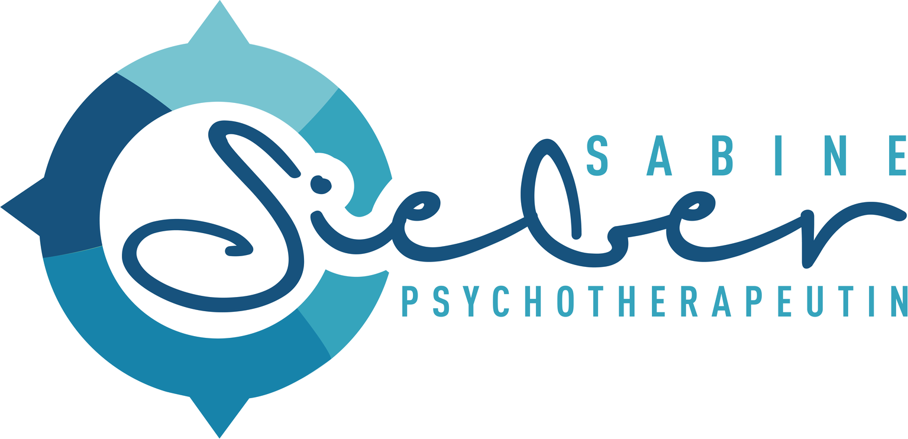

Praxis für Psychotherapie in Pfaffenhofen a. d. Ilm
Verhaltenstherapie für Erwachsene · Alle Kassen
Verhaltenstherapiefür Erwachsene ab 18 Jahren
Alle KassenBehandlung für Versicherte aller Kassen
Pfaffenhofen a. d. IlmIngolstädter Straße 18
Therapieangebot
Verhaltenstherapie für Erwachsene
Ich behandle Erwachsene ab 18 Jahren in Einzel- und Gruppentherapie.
Einzeltherapie
Verhaltenstherapie im persönlichen Einzelgespräch
Gruppentherapie
Verhaltenstherapie in der Gruppe
Schwerpunkte
- Anpassungsstörungen
- Depressionen
- Zwangserkrankungen
- Angststörungen
- Somatoforme Störungen
Über mich
Werdegang
Sabine Sieber
Psychologin M.Sc.
Psychologische Psychotherapeutin
-
Studium der Psychologie (B.Sc. und M.Sc.) an den Universitäten Würzburg und LMU München · Auslandssemester an der Boğaziçi Üniversitesi Istanbul
-
Weiterbildung zur Psychologischen Psychotherapeutin am Centrum für integrative Psychotherapie CIP München
-
Approbation
-
Psychotherapeutische Tätigkeit in verschiedenen Kliniken (Schmerztherapie, Ambulanz)
-
Führung einer Praxis in Donauwörth
-
Praxisgründung in Pfaffenhofen (Ilm)
Kontakt
Ingolstädter Straße 18
85276 Pfaffenhofen a. d. Ilm Auf der Karte zeigen
So erreichen Sie mich
Praxis
Praxis für Psychotherapie Sabine SieberIngolstädter Straße 18
85276 Pfaffenhofen a. d. Ilm Auf der Karte zeigen